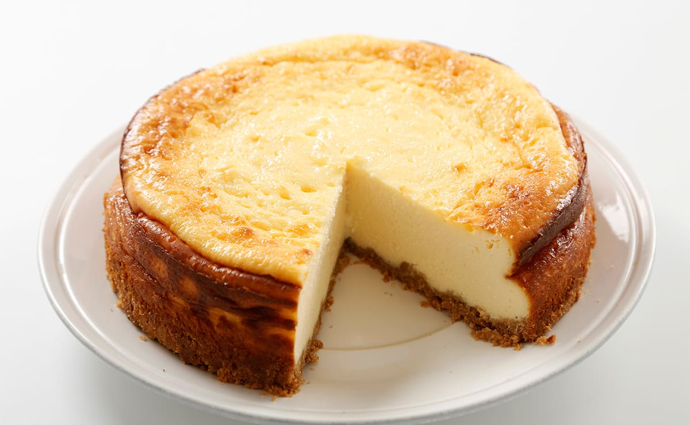

Cheesecake

A cheesecake or cheesecake is a very popular dessert since the 20th
century made with ricotta, quark cheese, sugar and sometimes other ingredients, such as:
eggs, cream, flour, potato, almonds or fruits.
Ingredients
- Cream cheese
- Eggs
- Sugar
- Flour
- Cream
Steps
- Put the cream cheese in a bowl and add 3 to 4 eggs.
- Mix it all together and add some sugar, flour and cream.
- Put the mixture in the oven at 200 degrees for about 30 to 40 minutes.
- Finally take it out, wait for it to cool and enjoy!
Other recipes